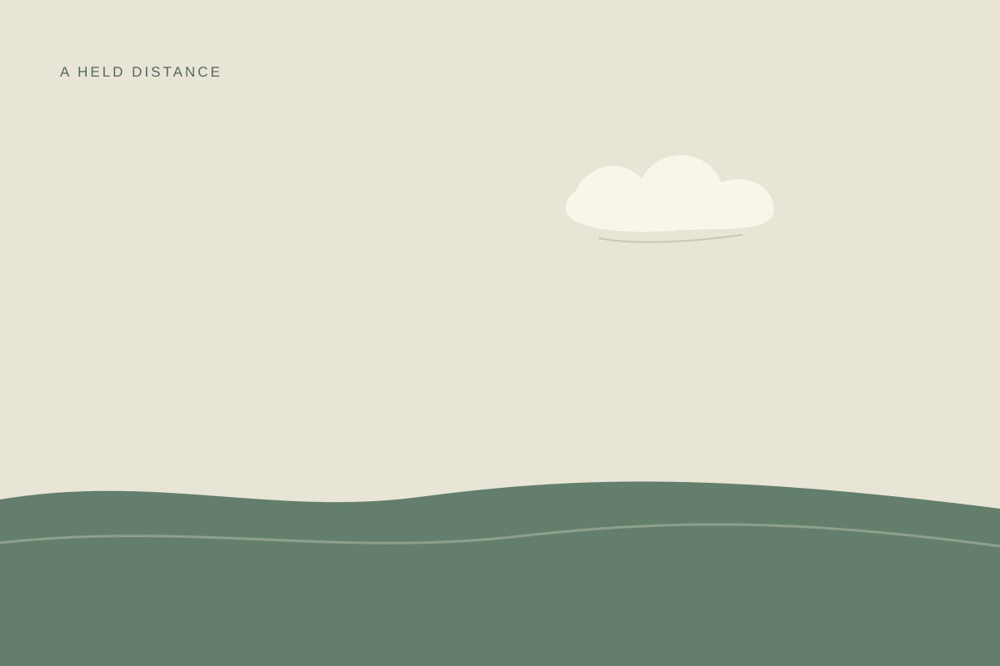

Vyt Aitken · 16 October 2026 · cut paper
The Cloud Does Not Reach

A small form held over a wide one; the interval does the joining.The chance weather note for Coquille National Forest gave 28.6°C, 22% relative humidity, 12% cloud cover, no precipitation, and wind speed 10.7 km/h. Wind direction was not supplied.
The cloud, plane, and distance are invented. This is not a view of the forest or a report of how its air feels. The figures remain a record; the image keeps its own silence.